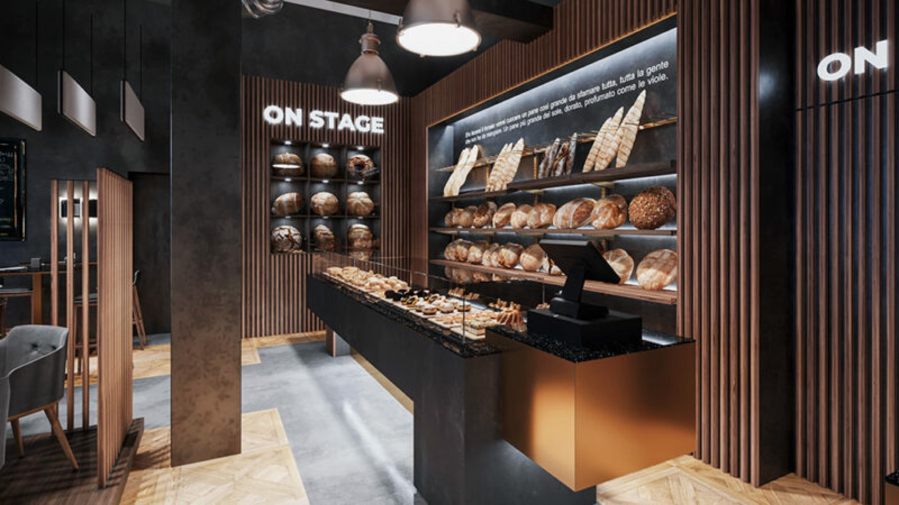
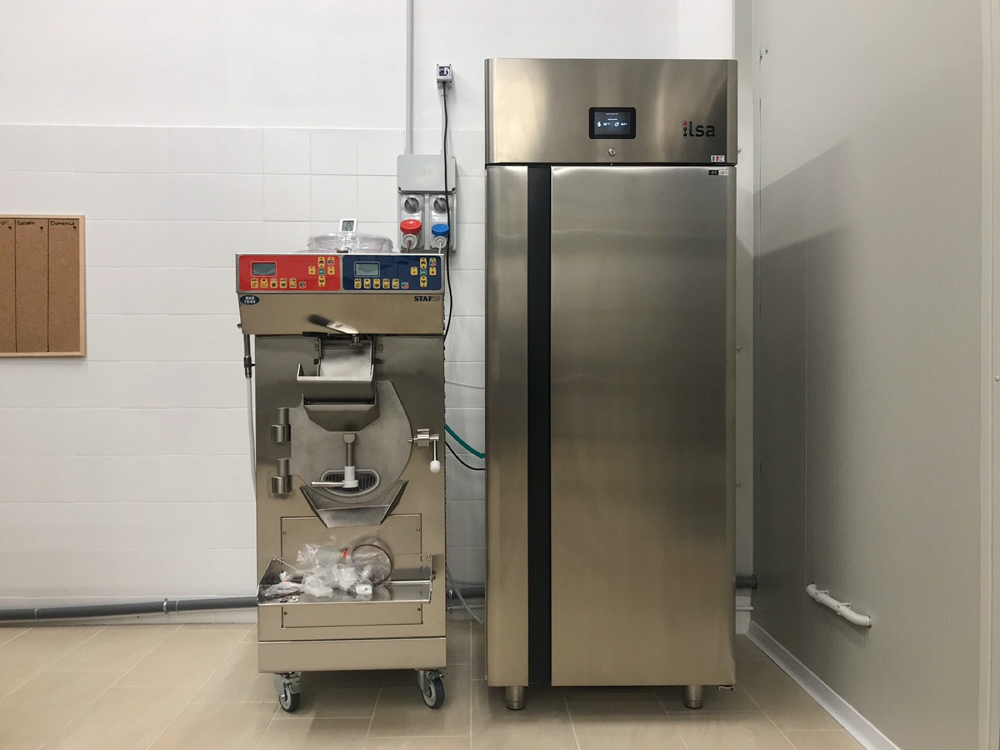

Panetterie e pasticcerie
Tipologie Panetterie, forni, pasticcerie, cake shop, cioccolaterie, confetterie
Progettiamo, produciamo e realizziamo panetterie, pasticcerie, gastronomie, enoteche, botteghe, laboratori e punti vendita aziendali. Dal progetto di banchi ed esposizione alla produzione degli arredi, fino alla fornitura delle attrezzature e al montaggio, gestiamo ogni fase della commessa.
In un negozio alimentare l'arredo deve valorizzare il prodotto e rispettare i requisiti di igiene, conservazione e pulibilità. Per questo progettiamo banchi, vetrine e laboratori considerando fin dall'inizio superfici, attrezzature e flussi di lavoro.
Un referente tecnico raccoglie le esigenze del cliente, seleziona arredi e attrezzature dei brand partner, coordina la progettazione, la nostra falegnameria, frigoristi, impiantisti e squadre di posa.
La pianificazione delle attività di fornitura e montaggio viene definita in funzione della data di apertura e delle caratteristiche della commessa, in accordo con il cliente.


Operiamo nei diversi ambiti del commercio e della produzione alimentare, progettando soluzioni di arredo in funzione del prodotto, della conservazione e del servizio al cliente.
Tipologie Panetterie, forni, pasticcerie, cake shop, cioccolaterie, confetterie
Tipologie Gastronomie, salumerie, macellerie, pescherie, caseifici
Tipologie Enoteche, wine shop, beer shop, liquor boutique, coffee retail
Tipologie Minimarket, alimentari, botteghe, negozi specializzati
Tipologie Cantine, oleifici, aziende agricole, caseifici, laboratori alimentari, dark kitchen
Hai un negozio alimentare da aprire o rinnovare? Dal banco vendita al punto vendita completo di laboratorio, affianchiamo commercianti, produttori e aziende agricole nella scelta e nella realizzazione delle soluzioni più adatte.
Parla con un nostro tecnicoRilievi, analisi delle esigenze e sviluppo del layout di vendita, esposizione, laboratorio e magazzino. Realizziamo elaborati 2D, progettazioni 3D e render, fino allo sviluppo tecnico ed esecutivo degli arredi.
Banchi gastronomia, vetrine per pane e pasticceria e isole refrigerate dei brand partner, integrati negli arredi su misura.
Scaffalature, espositori per vino, olio e prodotti confezionati, retrobanchi a vista che valorizzano il prodotto.
Banchi di lavoro, attrezzature professionali e arredi per laboratori e magazzini, con superfici idonee al contatto con gli alimenti.
Coordiniamo approvvigionamenti, logistica, consegne e montaggio, insieme a frigoristi e impiantisti, programmando le attività in funzione della data di apertura e delle caratteristiche della commessa.
Punti vendita, sale degustazione e spazi espositivi per cantine, oleifici e aziende agricole, per raccontare il prodotto dove nasce.
Ogni commessa racconta il nostro modo di progettare, produrre e realizzare negozi food. Tra le realizzazioni del settore: Sakuralab, Agricola Luigi Benincasa e La bottega del vicinato. Scopri tutte le realizzazioni.
Gestiamo forniture e realizzazioni di diversa dimensione e complessità, coordinando progettazione, produzione, attrezzature e installazione.
Sì. Li selezioniamo con i brand partner e li integriamo negli arredi su misura, coordinando frigoristi e impiantisti.
Sì. Selezioniamo superfici idonee e facili da pulire, con la documentazione tecnica richiesta per ogni fornitura.
Sì. Possiamo partire dal progetto del vostro architetto o professionista incaricato, occupandoci di ingegnerizzazione, produzione e installazione. In alternativa, possiamo seguire direttamente la progettazione del punto vendita.
Sì. Progettiamo anche gli spazi che il cliente non vede, organizzando attrezzature e flussi di lavoro.
Sì, progettiamo punti vendita aziendali, sale degustazione e spazi espositivi per cantine, oleifici e aziende agricole.
Collaboriamo con aziende specializzate in arredi, refrigerazione e attrezzature per il commercio alimentare, per offrire soluzioni che uniscono funzionalità, igiene e qualità dei materiali. Selezioniamo prodotti e sistemi in funzione delle caratteristiche di ogni commessa.
Raccontaci la tua commessa. Il nostro team tecnico ti affiancherà nella valutazione delle esigenze, degli spazi e delle soluzioni più adatte.